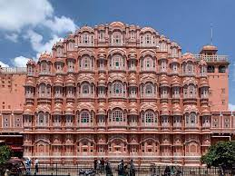
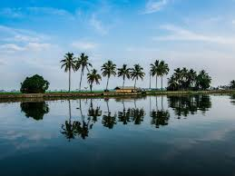

Agra

Jaipur

Kochi

We aim at not to become a company of success, but rather company of value. We are a team of dedicated professionals, and we firmly believe in providing sustainable tourism. We aim to provide new services with maximum perfection and consistency. At International Youth Club, we always prioritize customers’ satisfaction and do our best to achieve it. No matter, what type of vacation you need, we have a variety of packages to fulfill your requirements. Our holiday packages not only provide local sightseeing but also adventure tourism.